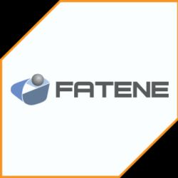

Pedro Correia Lopes Filho
Desenvolvedor web especializado em criar aplicações modernas, responsivas e de alta performance que elevam sua presença digital.
Um pouco sobre mim

Apaixonado pela tecnologia, transformo minha paixão em profissão. Com anos de experiência no desenvolvimento web, especializo-me em criar soluções digitais que não apenas funcionam perfeitamente, mas também encantam os usuários.
Minha abordagem combina design moderno com código limpo e eficiente, garantindo que cada projeto seja único, responsivo e otimizado para desempenho. Do front-end ao back-end, construo experiências digitais completas que impulsionam negócios.
Principais características de minhas aplicações
- Transições 3D suaves com aceleração de hardware.
- Navegação por toque para dispositivos móveis.
- Controles de reprodução automática e temporização personalizáveis.
- Compatibilidade com navegação por teclado.
- Efeitos de reflexo para maior profundidade.
Minha Formação
2024-2026 - Graduação em Ciência de Dados - UNINTER (Centro Universitário Internacional)
Formação superior com foco em Estatística Aplicada, Machine Learning, Visão Computacional, Processamento de Linguagem Natural, Big Data, Redes Neurais e Computação em Nuvem.
- Média 10,0 em Pré-Cálculo, Banco de Dados e Algoritmos
- Formação Concluída com Honras
- Projetos práticos de Inteligência Artificial

2006-2011 - Graduação Tecnológica em Análise de Sistemas Web - FATENE (Faculdade de Tecnologia do Nordeste)
Formação superior presencial focada na construção de arquiteturas web, lógica de programação, segurança na internet, bancos de dados e engenharia de software.
- 128 Créditos concluídos.
- Fundamentos sólidos de design e hipermídia
- Primeiro grande marco acadêmico na área tecnológica